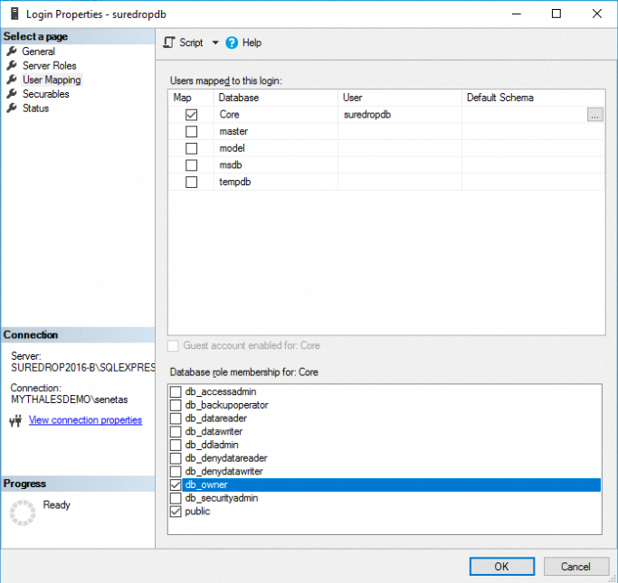

Select the SureDrop version to Install
There are several versions of SureDrop to choose from, in particular those relating to the operating system.
Specifically the Windows 2016 version and the Windows 2019 version.
Each release of SureDrop will always include the latest updates no matter which operating system is being run. There may be specific reasons as to why you would run a particular version.
Available SureDrop versions
The Windows Server 2016 version
This version of SureDrop has the following caveats:
It (WILL) run on Windows Server 2016.
It (WILL NOT) run on Windows Server 2019.
It (WILL) run on Amazon AWS and Microsoft Azure.
You (CANNOT) turn on automatic windows updates.
You (MAY) need to be directed to install certain Windows Cumulative Updates for a particular version of SureDrop.
It (WILL) run with Local or Remote databases. (Refer to the Database Mode section below for information on the difference between the two types.)
The Windows Server 2019 version
This version of SureDrop has the following caveats:
It (WILL) run on Windows Server 2019.
It (WILL NOT) run on Windows 2016.
It (WILL) run on Amazon AWS and Microsoft Azure.
You (CAN) turn on automatic windows Updates.
It (WILL) run with Local or Remote databases on a bare metal install of Windows 2019.
Local vs Remote Database modes
During the install process you will be asked the following question:
Connect to an existing database [Y/N]
If you answer N to this question, the databases will be automatically created as part of the install. The databases will be created internally within the Docker stack as SQL Server Express instances.
Installation of this sort is appropriate for proof of concept installs and test installs, however, because the database is not backed up, is not running any type of maintenance plan, and has no redundancy to protect against failure, it is not appropriate for a production installation.
For a production install and also for an install where it is not possible to run in Local mode, a Remote install will be required.
In a Remote install, the databases must be created manually on a separate instance of SQL Server which is installed and running prior to the install of SureDrop.
When you select Y to the above question, you will then be asked to input the connection string for the core database:
Enter the connection string for the core database:
This will look something similar to the following:
Data Source=[DB SERVER];Initial Catalog=Core;User Id=[USERNAME];Password=[PASSWORD]
Where:
[DB SERVER] = the IP address of the database Core server
[USERNAME] = the username that will be created in step 1 below
[PASSWORD] = the password of the username that will be created in step 1 below
Important
*Make sure the Initial Catalog=Core*
Initiating a Remote SureDrop Database
Establishing a Remote database is relatively straight forward. SureDrop uses two databases in any one instance of SureDrop, a Core database which holds company information and the sql_connection_string to the Client database, and a Client database that holds the client data.
You are not required to create the Client database, SureDrop will create it automatically. (The client database will have the same name as the company name, so please ensure that a database does not already exist of with same name)
The first step is to create a suredrop user in SQL Server and grant the dbcreator AND processadmin Server Role.
Create the empty Core database.
Grant
db_ownerandprocessadminpermissions to the suredrop user created above to the empty Core database.Create the CoreConfigV2 table in the Core database.
CREATE TABLE [dbo].[CoreConfigV2]( [company_name] [nvarchar](100) NOT NULL, [sql_connection_string] [nvarchar](max) NULL, [private_config_data] [nvarchar](max) NULL, [public_config_data] [nvarchar](max) NULL, CONSTRAINT [PK_CoreConfigV2] PRIMARY KEY CLUSTERED ( [company_name] ASC )WITH (PAD_INDEX = OFF, STATISTICS_NORECOMPUTE = OFF, IGNORE_DUP_KEY = OFF, ALLOW_ROW_LOCKS = ON, ALLOW_PAGE_LOCKS = ON) ON [PRIMARY] ) ON [PRIMARY]
Populate the CoreConfigV2 table.
After editing the values in [BRACKETS] in the insert statement below, run the following statement.
INSERT INTO CoreConfigV2 (company_name ,sql_connection_string ,public_config_data) VALUES ('SureDrop' ,'Data Source=[DB SERVER];Initial Catalog=Core;User Id=[USERNAME];Password=[PASSWORD]' ,'{ "scan_endpoint": "https://lab.votiro.com/disarmer/api/disarmer/v4", "azure_options": { "GroupId": "**REPLACEME**" }, "scan_policy": { "PolicyName": "Default Policy", "Token": "**REPLACE-ME**" }, "opt_kms": "False", "version": "2.11.0", "opt_azure": "False", "azure_application_id": "**REPLACE-ME**", "azure_tenant_id": "**REPLACE-ME**", "azure_access_key": "**REPLACE-ME**", "optLdap": "False", "optSta": "False", "staOptions": {}, "ldapOptions": {} }' )
Where:
[DB SERVER] = the IP address of the Client database server
[USERNAME] = the username that was created in step 1
[PASSWORD] = the password of the username that was created in step 1
Important
*Make sure the Initial Catalog=Core*
That’s it. Now continue to do the normal SureDrop install and enter the Core database connection string as shown above when prompted.